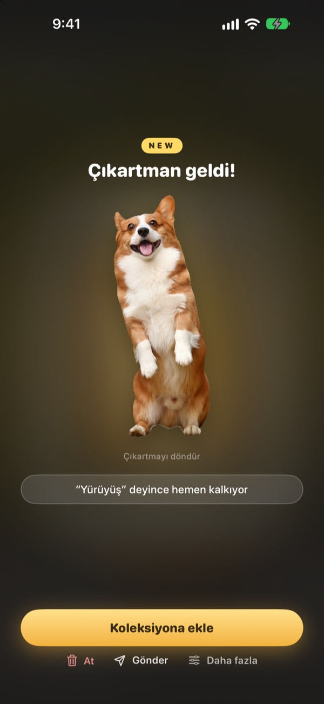
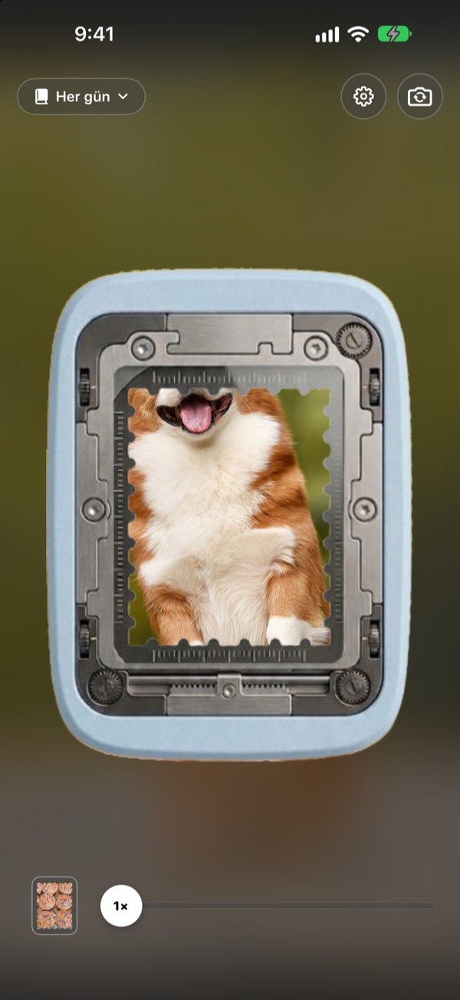
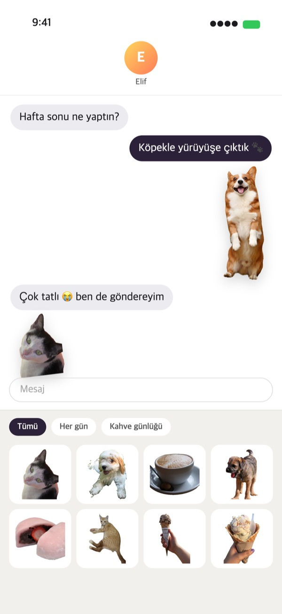
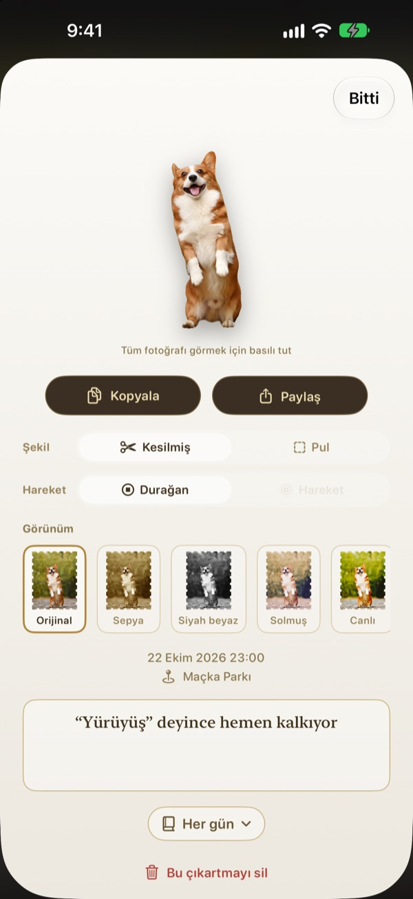
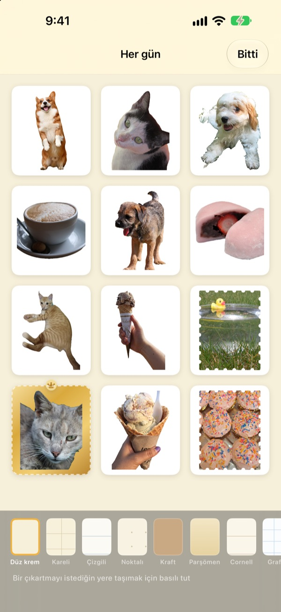

Basılı tut.
O an artık bir çıkartma.
Sahneyi delgeç penceresine hizala, basılı tut ve bırak. Köpeğin tam kendi şeklinde kesilir, basmadan hemen önceki ve sonraki kısa hareketle birlikte. Çıkartmayı hemen Mesajlar’dan ya da klavyeden gönderebilirsin.
Tüm özellikler ücretsiz. Çıkartmaların ve fotoğrafların yalnızca cihazında kalır.

Kendin dene
Bir sahne seç, delgeç düğmesini basılı tut ve bırak. Sonra farklı bir şekil ve görünüm dene.
En tatlı anlar galeride uykuya dalar
Köpeğin dilini çıkardığı anı yakaladın. Ama bunu çıkartma yapmak için fotoğrafı bulman, kesmen ve bir de çıkartma uygulaması açman gerekir. Bu arada sohbet çoktan başka konuya geçmiş olur. Punching çıkartmayı çektiğin yerde koparır; koleksiyona eklediğin anda Mesajlar’daki çıkartma çekmecesinde hazır bekler.
Konu kesilir, manzara pul olur
Kişi, evcil hayvan ya da nesne gibi kesilecek bir konu varsa yalnızca o kesilir. Manzara gibi konu yoksa tırtıklı kenarlı bir pul olarak koparılır.
Basma anının öncesinden ve sonrasından kısa bir hareket de eklenir, böylece çıkartma hareket eder.

Doğrudan Mesajlar’a ve klavyeye
Kopardığın çıkartmalar Mesajlar’daki çıkartma çekmecesinde görünür. Punching klavyesini açarsan diğer uygulamalarda da seçip yapıştırabilirsin.
Hareketli çıkartmalar hareket ederek gider. Bir çıkartmayı basılı tutup kopyala, istediğin yere yapıştır.

Şekil ve görünüm, sonradan bile
Kesilmiş şekil ile pul, hareket ile durağan görüntü arasında istediğin zaman geçiş yap. Orijinal fotoğraf saklandığı için kaç kez değiştirirsen değiştir, ilk günkü kadar net kalır.
Orijinal, Sepya, Siyah beyaz, Solmuş, Canlı ve Camgöbeği arasından bir görünüm seç; birkaç söz, tarih ve yer de ekle.

Koleksiyonlarda topla, kâğıda yazdır
Her tema için bir koleksiyon oluştur, Mesajlar’da ve klavyede de koleksiyon koleksiyon seç. Kraft, kareli, çizgili ya da parşömen gibi sayfalar seç, çıkartmaları dilediğin sırayla diz.
Bir koleksiyonu pul şeklinde kesim çizgileri olan yazdırmalık bir PDF’ye dönüştür ve doğrudan çıkartma kâğıdına yazdır.

Üç adımda başla
- 1
Hizala
Saklamak istediğin şeyi kameranın ortasındaki pencereye yerleştir.
- 2
Basılı tut ve bırak
Bıraktığın anda çıkartma kopar.
- 3
Sakla ve gönder
Koleksiyona ekle, Mesajlar’da ve klavyede hemen hazır olsun.
Nerede kullanılır, nereden değiştirilir
- Mesajlar
- Yazı alanının yanındaki ＋ ▸ Çıkartmalar ▸ Punching Çıkartmaları
- Diğer uygulamalar
- Punching klavyesini aç, küre tuşuyla ona geç, seç ve yapıştır
- Her yerde
- Çıkartmayı basılı tut, kopyala ve yapıştır
- Kâğıt çıkartma
- Koleksiyondaki ⋯ ▸ Kullanım ▸ Yazdırmalık çıkartma sayfası (PDF)
- Sayfa ve sıralama
- Koleksiyondaki ⋯ ▸ Serbestçe süsle
- Eski fotoğraflar
- Koleksiyondaki Fotoğraflar’dan içe aktar
- İlk şekil
- Ayarlar ▸ Koparma ▸ Varsayılan şekil
- Hareketi görme
- Ayarlar ▸ Görünüm ▸ Hareketi otomatik oynat
- Hızlı açma
- Kestirmeler’de ya da Denetim Merkezi’nde Punching Kamera’yı aç
Ayarlar, kamera ekranının sağ üstündeki dişli düğmesindedir.
Sık sorulan sorular
Çıkartmam hareket etmiyor.
Kameranın sağ üstünden Ayarlar ▸ Görünüm’e gir ve Hareketi otomatik oynat seçeneğinin açık olduğundan emin ol. Sonra çıkartmaya dokunup Şekil altında Hareket’in açık olduğunu kontrol et. Hareket her zaman birlikte kaydedilir, istediğin zaman açabilirsin. Fotoğraflar uygulamasından alınan fotoğraflar tek kare olduğu için hareket etmez.
Kesilmiş çıkartma yerine pul çıkıyor.
Manzara gibi kesilecek konu olmayan sahneler otomatik olarak pul şeklinde koparılır. Çıkartmaya dokunup Şekil bölümünden istediğin zaman değiştirebilirsin. En baştan pul şeklinde koparmak istersen Ayarlar ▸ Koparma ▸ Varsayılan şekil seçeneğini değiştir.
Mesajlar’da çıkartmalarımı göremiyorum.
Mesajlar’da yazı alanının yanındaki ＋ düğmesine dokun ▸ Çıkartmalar altında Punching Çıkartmaları’nı bul. Punching’de en az bir çıkartma kopardıktan sonra görünür; birden fazla koleksiyonun varsa koleksiyon koleksiyon göz atabilirsin. Ayrıntılı anlatım Ayarlar ▸ Kullanım ▸ Mesajlar’da ve klavyede kullan bölümünde.
Klavyeyi nasıl açarım?
Ayarlar ▸ Kullanım ▸ Mesajlar’da ve klavyede kullan bölümünde Ayarlar’ı Aç’a dokun, ardından Klavyeler ▸ Punching Çıkartmaları’nı aç. Çıkartma yapıştırmak için Tam Erişime İzin Ver gerekir, ama klavye yazdıklarını asla okumaz, göndermez ve internete bağlanmaz. Sonra herhangi bir uygulamada küre tuşuna dokunarak Punching Çıkartmaları’na geç.
Gerçek çıkartma yazdırabilir miyim?
Koleksiyonun sağ üstündeki ⋯ ▸ Kullanım ▸ Yazdırmalık çıkartma sayfası (PDF) seçeneğine dokun. Koleksiyonun tamamı için pul şeklinde kesim çizgileri olan 300 dpi yazdırmalık bir PDF oluşur; evdeki yazıcıda çıkartma kâğıdıyla ya da matbaada doğrudan kullanabilirsin. Adım adım anlatım aynı menüdeki Yazdırma rehberi bölümünde.
Eskiden oluşturduğum albümler nereye gitti?
1.0.1 sürümünden itibaren çıkartmaları gruplamanın tek yolu koleksiyon oldu. Her albüm aynı adlı bir koleksiyona dönüştü; içindeki çıkartmalar, sayfalar ve sıralama da olduğu gibi taşındı.
Durum çubuğunda yeşil ışık yanıyor.
Bu, iOS’un kamera kullanım göstergesi. Yalnızca kamera ekranı açıkken yanar. Bir koleksiyonu açtığında kamera durur ve ışık söner.
Bir çıkartmayı silersem ne olur?
Çıkartma, orijinal fotoğraf ve hareket verisi cihazından kalıcı olarak silinir, Mesajlar’daki çıkartma çekmecesinden de kaybolur. Geri getirilemez, o yüzden silmeden önce iyi düşün.
Fotoğraflarım ve çıkartmalarım nerede saklanıyor?
Yalnızca cihazında. Hesap yok, kendi sunucumuz yok, reklam yok. Cihazından dışarı yalnızca anonim kullanım istatistikleri, hata raporları ve kendi gönderdiğin geri bildirimler çıkar. Ayrıntılar Gizlilik Politikası’nda.
Gerçekten ücretsiz mi?
Evet, tüm özellikler ücretsiz. Beğenirsen uygulama içinden geliştiriciye bahşiş bırakabilirsin, ama bahşiş hiçbir özelliğin kilidini açmaz.
Soru ya da görüşlerini leeo@kakao.com adresine yazabilirsin. Genellikle 2–3 gün içinde yanıt veriyoruz. Hata bildirimlerini ve özellik önerilerini GitHub’da M1zz/StampCamera üzerinden de alıyoruz.